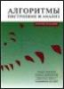
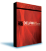
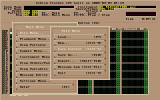
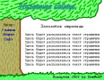

Если Вы хоть как-то связаны с компьютерной жизнью, то наверняка в этом разделе Вы найдете почитать что-нибудь для души. Конечно, основной упор моих статей делается на программирование, хакинг и алгоритмы, но есть и статьи на другие темы.
|  | Здесь собраны статьи по алгоритмам. Почти все статьи подробно и понятно расписаны. Рассмотрены не только основы алгоритмов, но и время их работы, полезность каждого из них. |
После долгого использования window$ довольно тяжело работать в Linux. Статьи данного раздела призваны облегчить жизнь людям, переходящим из window$ в Linux, а также помочь некоторым закоренелым линуксоидам.
Также хочу сказать, что этот раздел "живой" - т.е. статьи буду стараться поддерживать в максимально актуальном состоянии и постоянно обновлять. |
|  | Статьи по программированию в среде Delphi. В основном эти статьи для начинающих, однако и настоящий профи, возможно, найдёт для себя что-нибудь интересненькое... |
Статьи по программированию на языке PHP. В основном, это статьи для начинающих. |
Статьи по хакингу, фрикингу, резёрвингу, крэкингу и защите от всего этого. Здесь же можно найти статьи по "хаку без хака", т.е. о лёгком взломе. Так же именно здесь вы можете почитать статьи о веб-взломе и хакингу ICQ. |
|  | Статьи о компьютерной музыке и процессе её производства. Здесь же находятся описания программ-трекеров и статьи для начинающих |
|  | Статьи по дизайну, веб-дизайну, редизайну и т.д. Здесь же расположены уроки Photoshop, GIMP и т.д. |
В данном разделе выложены "Инструкции" для моей локальной сети. Они рассчитаны на то, чтоб даже самый ничего не смыслящий юзер смог настроить свой компьютер после переустановки windows и т.п.
Некоторые из статей адаптированы до более-менее универсального вида, а некоторые выложены прям в том виде, в котором у нас в локалке.
Если вы администратор локалки и вам лениво писать доки - гляньте в этот раздел. Может найдёте там чего-нибудь для себя... |
Статьи, не попавшие в другие разделы. Это редко статьи по программированию, но всё-равно они чаще всего как-то связаны с компьютером. |